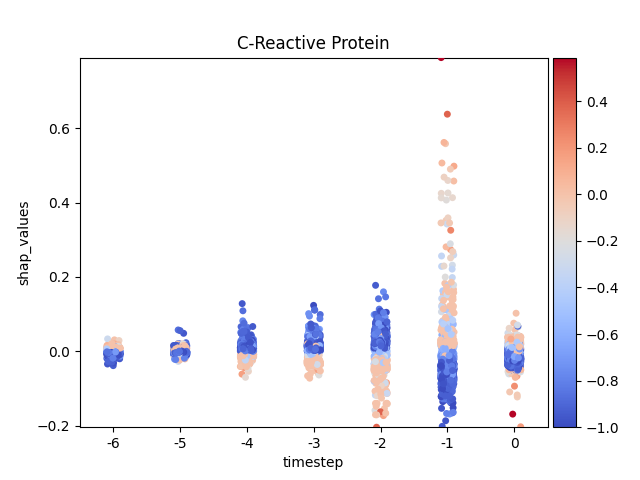
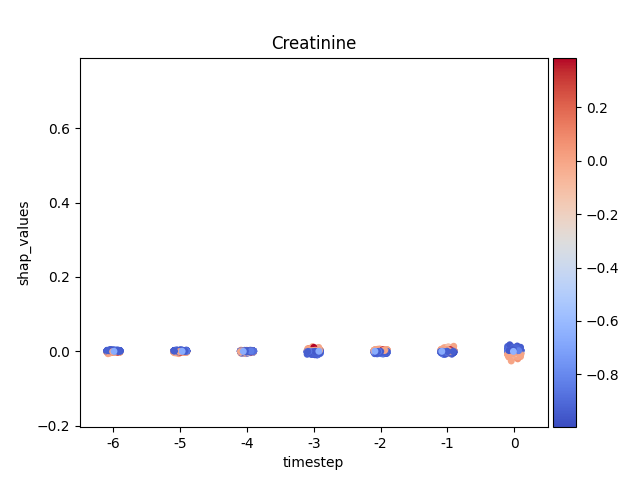

Note
Click here to download the full example code
Shap - Main 05 - Stripplot
Warning
This method is quite slow.
9 # Libraries
10 import shap
11 import numpy as np
12 import pandas as pd
13 import seaborn as sns
14
15 import matplotlib.pyplot as plt
16 import matplotlib as mpl
17 import matplotlib.colorbar
18 import matplotlib.colors
19 import matplotlib.cm
20
21 from mpl_toolkits.axes_grid1 import make_axes_locatable
22
23 try:
24 __file__
25 TERMINAL = True
26 except:
27 TERMINAL = False
28
29
30 # ------------------------
31 # Methods
32 # ------------------------
33 def scalar_colormap(values, cmap, vmin, vmax):
34 """This method creates a colormap based on values.
35
36 Parameters
37 ----------
38 values : array-like
39 The values to create the corresponding colors
40
41 cmap : str
42 The colormap
43
44 vmin, vmax : float
45 The minimum and maximum possible values
46
47 Returns
48 -------
49 scalar colormap
50 """
51 # Create scalar mappable
52 norm = mpl.colors.Normalize(vmin=vmin, vmax=vmax, clip=True)
53 mapper = mpl.cm.ScalarMappable(norm=norm, cmap=cmap)
54 # Get color map
55 colormap = sns.color_palette([mapper.to_rgba(i) for i in values])
56 # Return
57 return colormap, norm
58
59
60 def scalar_palette(values, cmap, vmin, vmax):
61 """This method creates a colorpalette based on values.
62
63 Parameters
64 ----------
65 values : array-like
66 The values to create the corresponding colors
67
68 cmap : str
69 The colormap
70
71 vmin, vmax : float
72 The minimum and maximum possible values
73
74 Returns
75 -------
76 scalar colormap
77
78 """
79 # Create a matplotlib colormap from name
80 # cmap = sns.light_palette(cmap, reverse=False, as_cmap=True)
81 cmap = sns.color_palette(cmap, as_cmap=True)
82 # Normalize to the range of possible values from df["c"]
83 norm = mpl.colors.Normalize(vmin=vmin, vmax=vmax)
84 # Create a color dictionary (value in c : color from colormap)
85 colors = {}
86 for cval in values:
87 colors.update({cval: cmap(norm(cval))})
88 # Return
89 return colors, norm
90
91
92 def load_shap_file():
93 """Load shap file.
94
95 .. note: The timestep does not indicate time step but matrix
96 index index. Since the matrix index for time steps
97 started in negative t=-T and ended in t=0 the
98 transformation should be taken into account.
99
100 """
101 data = pd.read_csv('./data/shap.csv')
102 data = data.iloc[:, 1:]
103 data = data.rename(columns={'timestep': 'indice'})
104 data['timestep'] = data.indice - (data.indice.nunique() - 1)
105 return data
106
107
108
109 # -------------------------------------------------------------------
110 # Main
111 # -------------------------------------------------------------------
112 # Configuration
113 cmap_name = 'coolwarm' # colormap name
114 norm_shap = True
115
116 # Load data
117 data = load_shap_file()
118 #data = data[data['sample'] < 100]
119
120 # Show
121 if TERMINAL:
122 print("\nShow:")
123 print(data)
Let’s see how data looks like
127 data.head(10)
Let’s show using sns.stripplot
Warning
This method seems to be quite slow.
Note
y-axis has been ‘normalized’
138 def add_colorbar(fig, cmap, norm):
139 """"""
140 divider = make_axes_locatable(plt.gca())
141 ax_cb = divider.new_horizontal(size="5%", pad=0.05)
142 fig.add_axes(ax_cb)
143 cb1 = matplotlib.colorbar.ColorbarBase(ax_cb,
144 cmap=cmap, norm=norm, orientation='vertical')
145
146
147 # Loop
148 for i, (name, df) in enumerate(data.groupby('features')):
149
150 # Get colormap
151 values = df.feature_values
152 cmap, norm = scalar_palette(values=values,
153 cmap=cmap_name, vmin=values.min(),
154 vmax=values.max())
155
156 # Display
157 fig, ax = plt.subplots()
158 ax = sns.stripplot(x='timestep',
159 y='shap_values',
160 hue='feature_values',
161 palette=cmap,
162 data=df,
163 ax=ax)
164
165 # Format figure
166 plt.title(name)
167 plt.legend([], [], frameon=False)
168
169 if norm_shap:
170 plt.ylim(data.shap_values.min(),
171 data.shap_values.max())
172
173 # Invert x axis (if no negative timesteps)
174 #ax.invert_xaxis()
175
176 # Create colormap (fix for old versions of mpl)
177 cmap = matplotlib.cm.get_cmap(cmap_name)
178
179 # Add colorbar
180 add_colorbar(plt.gcf(), cmap, norm)
181
182 # Show only first N
183 if int(i) > 5:
184 break
185
186 # Show
187 plt.show()
- 
- 
Total running time of the script: ( 0 minutes 20.573 seconds)